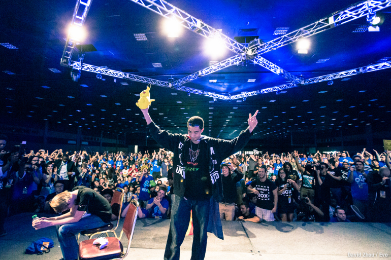
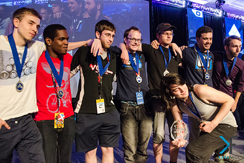

Super Smash Bros. Competitive Community
The competitive community for Super Smash Bros. first sparked with the second installment, Super Smash Bros. Melee. Tournaments from 2001-2005 were very informal and would usually be hosted out of player's basements or the occasional game store. This installment was the best-selling game on the Nintendo GameCube. Melee is notoriously known for having many hidden techniques that may no longer exist in current installments which is a strong feature of the game that keeps this game played over a decade after release. Players interacted with one another on an online message board known as Smashboards.com where the community hosts discussions of techniques, news, and competitions. Players today can search for local tournaments around their area and participate. The site also holds rankings for registered players who are active in the competitive community.
Professional Players
Much like professional spectator sports, the community idolizes it's top players. Players are typically called by their SmashBoards alias which is common in eSports with other games. These aliases when talked about are widely recognized by the community and players love to interact or learn from these top players through social media, livestreams, or events.
The Smash Brothers Documentary
"With the release of the "Smash Doc" in October 2013, a 9-part documentary series providing an entertaining look back at the history of the game and the top players, gaining major popularity all around the internet, many people started flooding to the scene in search of finding out for themselves what all these players are devoting their lives to." -meleeinfo.com